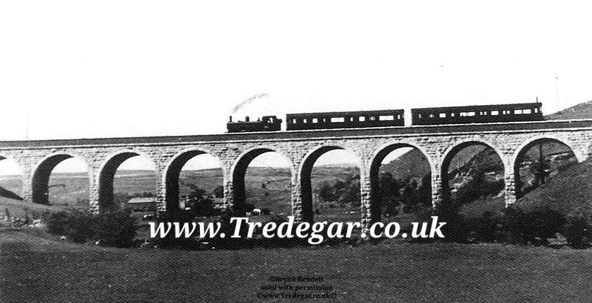

Discover the passion, legacy, and community behind the digital preservation of Tredegar's rich heritage.
The Tredegar Digital Archive project first began its mission back in 1991. What started as a local initiative to collect physical documents, photographs, and oral histories from town residents has evolved over more than three decades into an expansive, dedicated digital preservation effort.
As the internet grew, so did our goals. We transitioned from localized physical backups to building an expansive server network capable of housing thousands of media pieces, industrial blueprints, and community logs, protecting the unique legacy of the Sirhowy Valley for generations to come.

Our core objective remains clear: to build, maintain, and expand an independent digital mirror of Tredegar. This includes historical records, localized business directories, and a space to support voluntary community activities.
By protecting these records from getting lost to time, we ensure that the industrial might, political contributions, and cultural humor of Tredegar continue to stand firmly as an inspiration for the future.